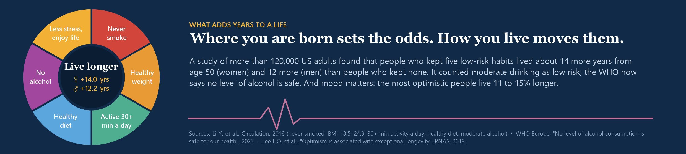

The dashboard is 1280 px wide; on a narrow screen, scroll it sideways or open it on Tableau Public.
Since 1960 the world has gained 22 years of life. This dashboard shows where those years went: life expectancy for 217 countries, from the world down to region, sub-region, income group and country.
The dashboard is 1280 px wide; on a narrow screen, scroll it sideways or open it on Tableau Public.
People in high-income countries live 80.1 years on average, 15.1 years longer than people in low-income countries (65.0). The gap is narrowing: the regions that started lowest gained the most since 2000. The trend chart marks the dips that interrupt the climb: COVID-19 almost everywhere in 2021, HIV/AIDS across southern Africa in the late 1990s and early 2000s, the Rwandan genocide in 1994, and the Khmer Rouge years in Cambodia.

All numbers come from World Bank Open Data (CC BY 4.0): life expectancy at birth (total, female, male) and population, 1960 to 2023. Regions are the World Bank’s seven; sub-regions come from the UN M49 standard. That gives a five-level hierarchy:
| Level | Units | Example |
|---|---|---|
| 1 World | 1 | World |
| 2 Region | 7 | Sub-Saharan Africa |
| 3 Sub-region | 28 | Western Africa |
| 4 Income group | 62 | Western Africa · Low income |
| 5 Country | 217 | Burkina Faso |
Every unit above country level is a population-weighted average, recomputed for every year from the countries reporting that year. Each value is banded against its peers at the same level: top 25%, bottom 25%, or the middle. Rankings leave out countries under 1M people (otherwise Monaco and San Marino top every list), except in the few groups that have none.
The two CSV files the workbook reads are here: units (one row per unit and metric) and charts (yearly trends, women and men, rankings and map rows).
The table uses the same parameter-driven drill-down as my hierarchy drill-down write-up: each row carries its path (|World|SSF|SSF-WesternAfric|), a parameter remembers which rows are open, and one click action adds or removes a row’s path. Here it runs five levels deep on real data.
The tiles are one sheet: a bar on a fixed 0–1 axis fills each cell, coloured by band. A calculation picks what to show from the selected unit (the p_SelectedUnit parameter): its parent as a “‹” tile, plus its children (or, at the income-group level, its siblings). Two parameter actions on that sheet set the selected unit and reset the open rows, so every chart, the map and the table follow one click.
// Show Tile: the parent, then the children of the selected unit
[Metric Order] = 1 AND (
[Unit No] = [Parent of selected]
OR ([Level] = [Selected level] + 1 AND [unit sits under the selected unit])
)A filled map on each country’s ISO alpha-2 code, with Tableau’s country geographic role. A path column holds every country’s ancestors, so one filter, CONTAINS([Path], '|' + [p_SelectedUnit] + '|'), keeps only the countries inside the selection, and the map zooms to them.
The labels on the trend line are found in the data, not placed by hand. For each unit, a known event (COVID-19, HIV/AIDS, the Rwandan genocide, the Khmer Rouge years) is noted only if the unit contains the affected countries and its own line drops clearly inside that event’s window.
The header (an arc of life, with the world’s average lifespan in 1960 and today marked on it) and the closing habits wheel are drawn in code, so there is no stock art to license.

corner-radius on dashboard zones), with serif headings that match the header.The tile label compares each unit with the selected unit’s parent. World has no parent, so the comparison was NULL, and IIF(NULL, …) returns NULL: every World-level tile lost its label. Wrapping the lookup in IFNULL(…, '') fixed it.
After adding columns to a CSV, Tableau kept reporting them as missing: it reuses a cached copy of the file, keyed by its path. Renaming the files (or refreshing the data source) clears it.
Ranking all 217 countries puts Monaco, San Marino and Liechtenstein on top. Limiting rankings to countries of 1M+ people tells a more useful story: Hong Kong, Switzerland, Japan.
% needs integers (wrap the value in INT), and dividing two integers returns a decimal: use DIV() for whole-number division.